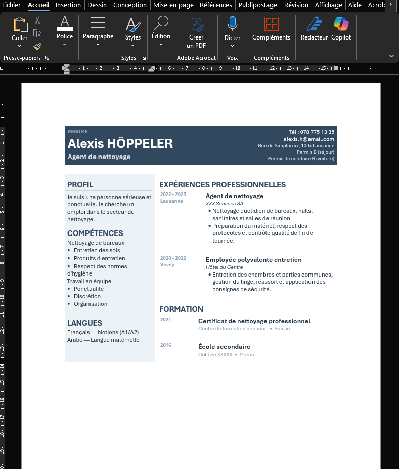
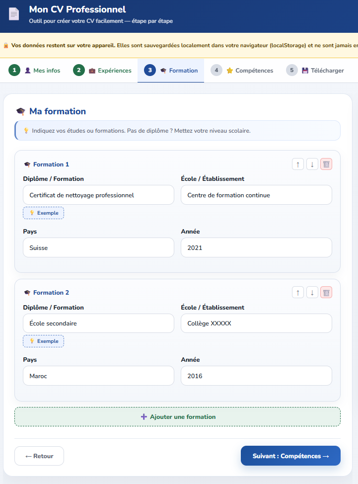

-60 min
par dossier CV + lettre vs. production manuelle dans Word
Développé pour les formateurs et leurs participants. Parcours guidé, export CV + lettre de motivation en Word modifiable, données 100 % locales.

CV Word Lettre de motivation
Lettre de motivation
Il existe aujourd'hui de nombreux outils en ligne pour créer un CV. Le problème : ils envoient les données des participants sur des serveurs externes, nécessitent un compte, et dépendent d'une connexion internet. Ce n'est pas acceptable dans un cadre d'accompagnement professionnel.
Trop de temps perdu sur la mise en page, pas assez sur le fond du dossier.
5 étapes guidées, du profil à l'export. Utilisable seul ou animé en séance.





Adapté à tous les contextes d'accompagnement — en groupe, en individuel ou en autonomie.
Les données saisies (nom, adresse, téléphone, e-mail, photo) ne quittent jamais l'appareil utilisé.
Données en localStorage — sur votre appareil uniquement.
Bouton "Effacer mes données" visible en permanence. Proposé automatiquement après export.
Politique de sécurité stricte. PDF.js vérifié par empreinte SHA-384.
Aucun Google Analytics, aucun pixel pub. Polices hébergées localement.
| Protection | Statut | Garantie |
|---|---|---|
| Données 100 % locales | ✓ Actif | Aucun serveur ne reçoit vos informations |
| Bouton effacement | ✓ Actif | Suppression immédiate localStorage + photo |
| Content Security Policy | ✓ Actif | Connexions réseau et scripts non autorisés bloqués |
| SRI PDF.js SHA-384 | ✓ Actif | Bibliothèque externe vérifiée avant exécution |
| Anti-clickjacking | ✓ Actif | Intégration en iframe impossible |
| Anti-XSS (textContent) | ✓ Actif | Aucune donnée interprétée comme du code |
| No-referrer | ✓ Actif | URL non transmise lors de la navigation |
| Polices auto-hébergées | ✓ Actif | Aucune requête vers Google Fonts |
Cliquez sur les captures pour les agrandir. Toutes les fonctionnalités sont disponibles.